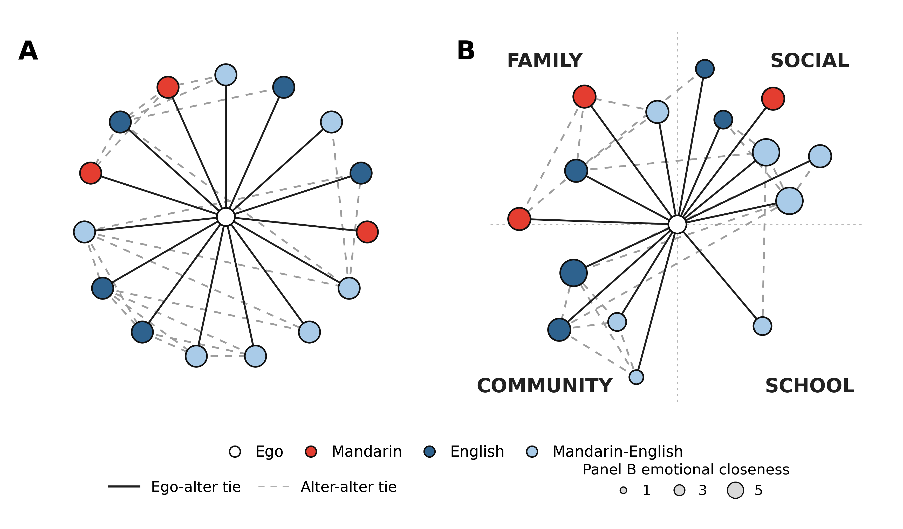

This tutorial visualizes the same deidentified Mandarin–English
network used in the manuscript's preprocessing walkthrough. It
reproduces manuscript Figure 8 as two complementary views of
jefwan37: a neutral circular layout (A) and a
context-organized layout (B).
Both panels contain the same 15 alters, the same ego–alter ties, and the same 21 alter–alter ties. Changing the layout does not change the network.
| Visual feature | Meaning |
|---|---|
| Node color | Reported ego–alter interaction language: Mandarin, English, or Mandarin–English |
| Node size in A | Constant; emphasizes composition and topology |
| Node size in B | Emotional closeness |
| Solid line | Ego–alter tie |
| Dashed gray line | Alter–alter tie |
| Position in A | Circular layout without context grouping |
| Position in B | Interaction context: family, social, community, or school |
The visualization uses the tidy alter table and edge list created in the preprocessing tutorial.
from pathlib import Path
import pandas as pd
repo = Path.cwd()
data_dir = repo / "BiNet_preprocessing_compositional_Measures" / "data"
alters = pd.read_csv(data_dir / "jefwan37_tidy_alter.csv")
edges = pd.read_csv(data_dir / "jefwan37_alter_edges.csv")
assert len(alters) == 15
assert len(edges) == 21
assert set(edges.columns) == {"source", "target"}The deidentified labels A01–A15 connect the
node table and the edge table. They replace names and other direct
identifiers.
Use one color dictionary in every figure so that a language category never changes color between panels.
LANGUAGE_COLORS = {
"Mandarin": "#E43D30",
"English": "#2E628E",
"Mandarin-English": "#A9CBE8",
}In this respondent's reported interaction network, the color counts are:
| Language used | Alters |
|---|---|
| Mandarin | 3 |
| English | 5 |
| Mandarin–English | 7 |
The circular view gives every alter the same visual status. It is useful for inspecting overall language composition and alter–alter connectivity without assigning spatial meaning to context.
import math
def circle_positions(labels, radius=0.83):
return {
label: (
radius * math.cos(math.pi / 2 + 2 * math.pi * i / len(labels)),
radius * math.sin(math.pi / 2 + 2 * math.pi * i / len(labels)),
)
for i, label in enumerate(labels)
}All alter nodes are drawn at a constant size in Panel A. Solid
ego–alter ties radiate from the center; dashed alter–alter ties come
directly from jefwan37_alter_edges.csv.
The contextualized view moves alters into quadrants based on
interaction_context. This respondent has no work alters, so
no work quadrant is displayed. Node size represents emotional closeness,
allowing context, language use, and tie strength to be inspected
together.
CONTEXT_RANGES = {
"family": (100, 178),
"social": (12, 80),
"community": (205, 255),
"school": (285, 335),
}
def context_positions(alters):
positions = {}
for context, (low, high) in CONTEXT_RANGES.items():
labels = alters.loc[
alters.interaction_context == context, "alter_label"
].tolist()
degrees = [(low + high) / 2] if len(labels) == 1 else [
low + (high - low) * i / (len(labels) - 1)
for i in range(len(labels))
]
for i, (label, degree) in enumerate(zip(labels, degrees)):
radius = 0.76 if i % 2 == 0 else 1.05
angle = math.radians(degree)
positions[label] = (
radius * math.cos(angle),
radius * math.sin(angle),
)
return positionsThe alternating radii reduce overlap in dense contexts. They are a display choice and do not represent an additional network variable.
Run from the repository root:
python BiNet_Network_Visualization/code/generate_jefwan37_network.pyDependencies are listed in requirements.txt. The script
validates the node and edge counts before writing
figures/fig08_network_views_jefwan37.png.

To reuse the script, provide one tidy alter file and one edge file with the same minimum fields:
participant_id, alter_label,
languageUsedCategory, interaction_context, and
emotional_closeness;source and target, using the
alter labels from the node table.Before plotting, verify that every edge endpoint occurs in the alter table, every alter has exactly one analysis context, and each language category has a defined color. Context placement and node-size scaling can then be adjusted without changing the underlying measures.